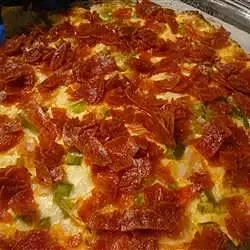

Pepperoni Pizza

Behold an amazing pizza that is not high in calories,
that will surely bring a smile to your face and keep your cash in your pocket
follow along with the directions and ingriedients and prepare yourself for a savory meal!
Below you will find the ingriedients to prepare this amazing pizza
Ingriedients
- 1(8 ounce) package of Philadelphia Cream Cheese, softened
- 1(8 ounce) package Kraft Shredded Low-Moisture Part-skim Mozzarella Cheese
- 1/2 cup finely chopped pepperoni
- 1/4 cup finely chopped green peppers
- 1(16 ounce) package Ritz Crackers
Now that you've procured said items for the pizza lets throw it together
Steps
- Preheat oven to 350 degrees F. Combine cheeses in medium bowl;mix well.Gently Stir in remaining ingriedients
- Spread into 9-inch pie plate
- Bake 25 to 30 minutes or until top is puffed and lightly browned. Serve warm with crackers.